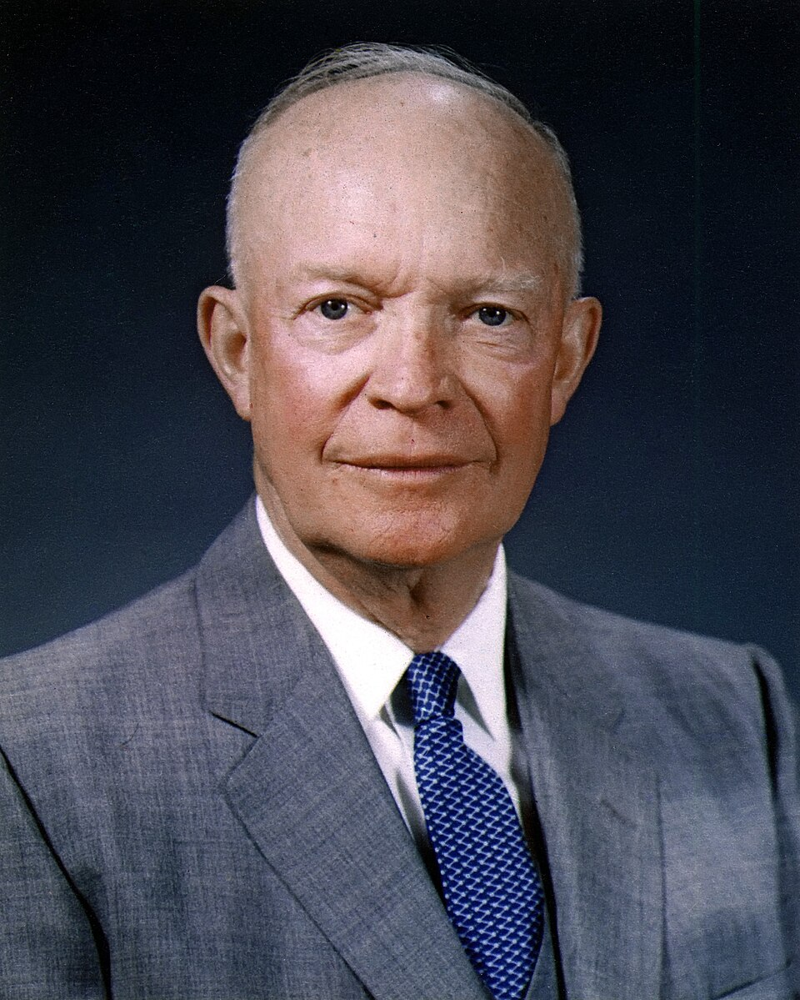
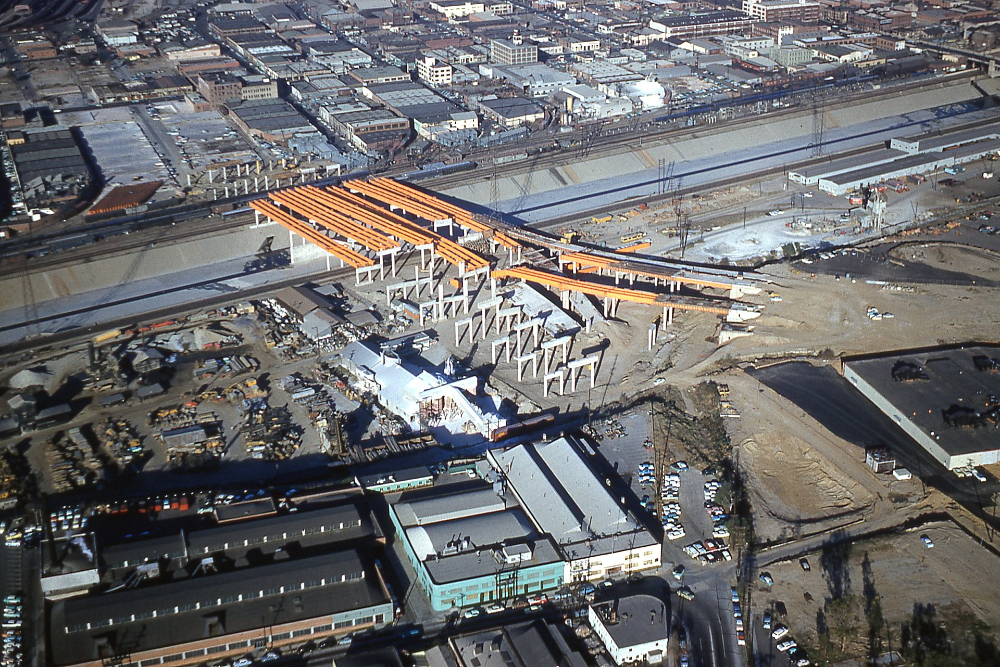

The Play Call — Event 2 of 4
The Interstate Highway Act
Eisenhower spent $25 billion to connect a nation. The highways are still here. So are the neighborhoods they destroyed.
United States · 1956 · Expansionary Fiscal Policy

Eisenhower spent $25 billion to connect a nation. The highways are still here. So are the neighborhoods they destroyed.
In 1956, there was no efficient way to drive from one end of the United States to the other. Roads were narrow, slow, and disconnected. Dwight Eisenhower had seen Germany's autobahn during World War II — and he wanted one for America.
But Eisenhower's argument was not just about convenience. It was about national defense. If the Soviet Union attacked, the military would need to move troops and equipment across the country quickly. The existing road system could not handle it. A national highway network was a military necessity — and a massive economic opportunity.
Congress passed the Federal Aid Highway Act in June 1956. The federal government would pay 90 percent of the cost. States would cover the remaining 10 percent. The total bill was $25 billion — the largest public works project in American history at that point.
"The amount of concrete to be used would build six sidewalks to the moon."
— Popular description of the Interstate Highway System's scale, 1956

Every dollar the federal government spent on highway construction moved through the economy in ways that multiplied the original investment. Construction workers earned wages and spent them locally. Steel companies filled massive orders. Concrete manufacturers ran at full capacity. Trucking companies formed to use the new roads. Motels, gas stations, and fast food restaurants built themselves along every exit.
The highways did not just connect cities. They created entirely new economic geography. Suburbs expanded outward along the new roads. Shopping malls replaced downtown stores. The automobile economy grew into the dominant force in American life — and it was built on a foundation of government spending.
This is the multiplier effect at a national scale. One government investment in infrastructure reshaped where Americans lived, worked, shopped, and built businesses for the next seven decades.
The interstate system connected the country in ways that transformed everyday life. Travel times dropped dramatically. Goods moved cheaper and faster. American manufacturing reached national markets that were impossible to access before. The trucking industry alone grew into a multi-billion dollar sector of the economy.
Military logistics improved exactly as Eisenhower intended. The system is still in use today — almost 70 years later.
Highway planners deliberately routed interstates through Black and low-income neighborhoods in cities across the country. In city after city, vibrant communities were demolished to make room for the roads that connected wealthier suburbs to downtown business districts.
In Los Angeles, in Miami, in New Orleans, in San Diego — entire neighborhoods were cut in half or erased entirely. The people displaced by construction rarely received fair compensation. The highways that built the suburbs destroyed the urban communities they ran through.